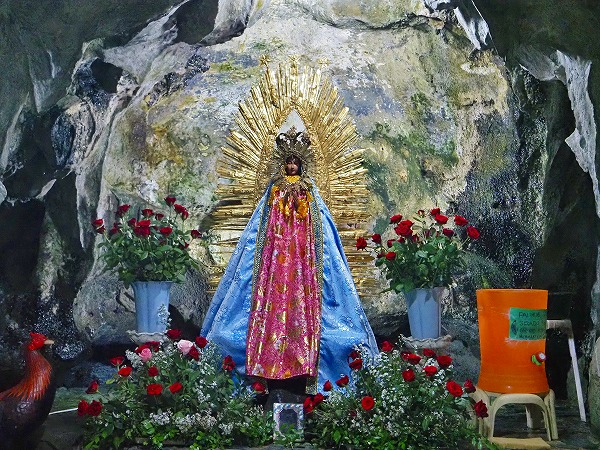

セブ島の珍教会巡りもそろそろ仕舞いである。
最終日に向かったのはセブシティ郊外の
グアダルーペ洞窟教会。
洞窟寺院、というのも気になったのだが、それ以上に
メキシコのグアダルーペが祀られているという点が気になったので行ってみる事にした。
場所はセブシティの中心から6キロほど北。
山一つ越えた向こう側はセブ屈指の高級住宅街だ。
結構急な坂道をガンガン登っていく。
隣に高級住宅街があるとは思えない小さな家が密集した街を抜けると教会があった。
教会とはいえトタン屋根を架けただけの簡素なものだ。
壁がないので
ジャングルの中の教会、といった面持ちだ。
祭壇にはグアダルーペっぽい聖母像が飾られている。
グアダルーペについて詳しくは
こちらを御覧くだされ。
何故、メキシコとは縁もゆかりもないこの場所でグアダルーペが信仰されているのか？
それは18世紀に遡る。
ある日、この辺りで猟師が洞窟に逃げ込んだ鶏を追いかけていたら、そこで偶然聖母像を発見した。
その像がグアダルーペだったのだ。
その後、1933年に近くに出来た教会にグアダルーペ像は移され、今では洞窟にそのレプリカが祀られているというのだ。
祭壇の脇には洞窟の入り口が見える。
入口。
お邪魔しますよ。
洞窟は案外狭く、奥に件のグアダルーペ像が祀られている。

うむ。確かに後のビカビカとかグアダルーペに違いない。
それにしてもセブにメキシコの聖母があること自体が不思議だ。
メキシコもフィリピンもスペインが宗主国だったからスペイン経由で伝わったのだろう。
マニラにもグアダルーペの教会があるというからフィリピンでも比較的有名な聖母なのかもしれない。
この洞窟からしみ出てくる水を飲むと病気が治るという。
グアダルーペ像の隣にはその奇跡の水が容器に溜めてあった。
簡素な造りだが、椅子の数を見るとそれなりの人が訪れるようだ。
聞けばセブ島における巡礼地になっているそうな。
人工洞窟っぽいものもあった。
そしてお約束のセントニーニョ像。
野趣あふれる教会だった。
帰りはバイタクで街まで戻った。
建物が密集した狭くて曲がりくねった坂道を猛スピードで下っていき、振り落とされそうで激怖かったです。
以上でセブ島の珍教会巡りは終了。
短い滞在だったがそれなりに満足の行く旅であった。